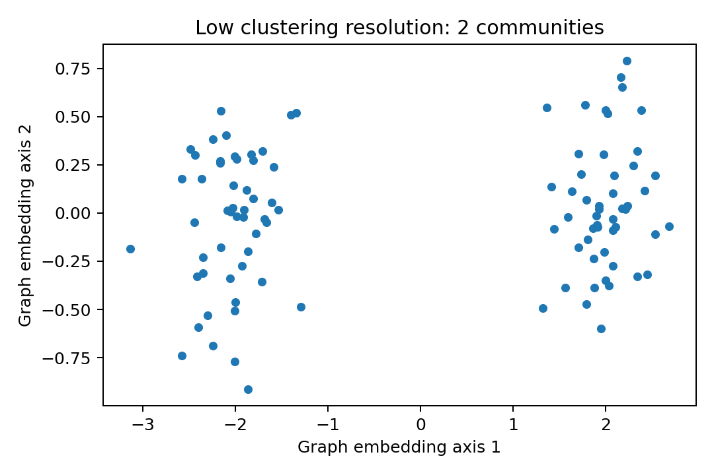
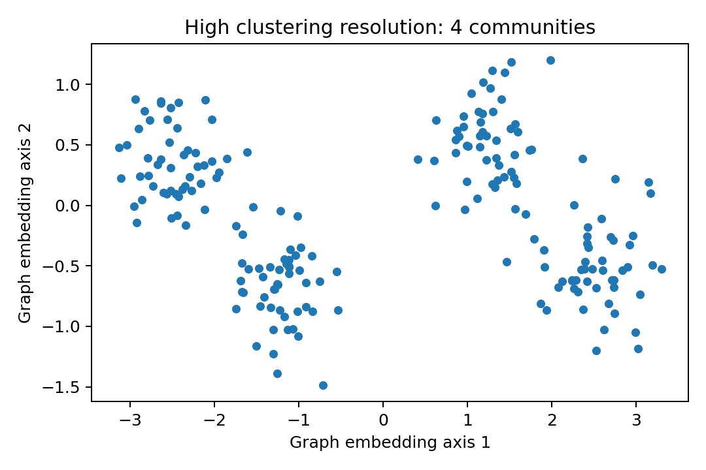

5. Nearest neighbors, graph clustering, and resolution
From PCA coordinates to graph communities
PCA gives every cell a shorter numerical description: its scores on the selected principal components. Seurat uses those coordinates to move through the following sequence:
- PCA coordinates: represent each cell using selected PC scores.
- Nearest neighbors: find the cells closest to each cell in that PCA space.
- k-nearest-neighbor graph: connect cells to their local neighbors.
- shared-nearest-neighbor graph: strengthen connections supported by overlapping neighborhoods.
- Graph communities: find groups with stronger connections within the group than outside it.
- Computational clusters: save a community label for every cell, then interpret those communities biologically.
In compact form:
PCA coordinates → nearest neighbors → kNN graph → SNN graph → graph communities → clustering
What is a node?
A graph consists of objects called nodes. In this scRNA-seq graph, each cell is one node. A dataset containing 10,000 retained cells therefore contributes 10,000 cell nodes to the graph.
Cell A
●
Cell B ● ● Cell C
●
Cell DThis layout is only a schematic. The positions on the page do not determine which cells are related; the relationships are calculated from similarity in the selected PCA dimensions.
What is an edge?
An edge is a connection between two nodes. Here, an edge indicates that two cells are treated as neighbors or have a supported local similarity relationship.
Cell A ●────────● Cell BA slightly larger graph might look like this:
● Cell A
/ \
/ \
Cell B ●───● Cell C
\ /
\ /
● Cell D────● Cell ENot every cell is connected to every other cell. The graph is deliberately sparse: its edges preserve local relationships rather than all possible cell pairs. An edge also does not mean that two cells have the same biological identity, directly interact in the tissue, or belong to the same clone.
From PCA coordinates to a kNN graph
After PCA, each cell has a coordinate on every retained PC. For example:
dims = 1:30means that cellular similarity is calculated using cell scores in 30-dimensional PCA space. It does not mean 30 genes or 30 clusters.
For every cell, Seurat asks:
Which other cells are closest to this cell in PCA space?
The value k is the number of nearby cells considered when defining that local neighborhood. Connecting cells to these neighbors produces the k-nearest-neighbor (kNN) graph. In FindNeighbors(), dims selects the PCs that define similarity, whereas k.param controls the neighborhood size.
What FindNeighbors() does
obj <- FindNeighbors(obj, dims = 1:30)FindNeighbors() uses the selected PCA dimensions to construct the neighborhood representation, including the SNN graph used for clustering.
FindNeighbors() does not determine whether a cell is a CD4 T cell, NK cell, monocyte, or another biological identity. It creates the similarity graph used by the clustering algorithm.
FindClusters() detects graph communities
obj <- FindClusters(obj, resolution = 0.6)FindClusters() performs graph-community detection. The algorithm searches for groups of cells that are more strongly interconnected with one another than with the remainder of the graph.
Computational clusters are graph communities. Biological identities are assigned afterward using marker genes, known biology, sample context, and other evidence.
What resolution means
Resolution tunes the granularity of graph partitioning.


Higher resolution generally produces finer graph partitions and therefore more, smaller clusters. Lower resolution generally produces fewer, broader clusters.
Resolution is not a probability, p-value, image resolution, or accuracy score. A higher value can reveal a meaningful subpopulation, but it can also divide a continuous state, isolate technical variation, or create unstable small groups.
dims and resolution solve different problems
dims: which PCs define cell-to-cell similarity?resolution: how finely is the resulting graph partitioned?
Changing either can alter the final clusters, but for different reasons. For a resolution sensitivity analysis, keep the PCA dimensions and SNN graph fixed so that only graph-partition granularity changes.
Resolution sensitivity exercise
Assume that FindNeighbors(obj, dims = 1:30) has already constructed one SNN graph. Cluster that same graph at several resolutions and save every result:
resolutions <- c(0.2, 0.4, 0.6, 0.8, 1.0)
for (res in resolutions) {
obj <- FindClusters(
obj,
resolution = res
)
obj[[paste0("cluster_res_", res)]] <-
as.character(Idents(obj))
}Each FindClusters() call updates the active identities. Saving a copy immediately prevents the earlier assignment from being overwritten by the next resolution. The resulting metadata columns have clear names:
cluster_res_0.2
cluster_res_0.4
cluster_res_0.6
cluster_res_0.8
cluster_res_1The final name ends in 1, rather than 1.0, because that is how R converts the numeric value when constructing the name. These numeric suffixes also work directly with the optional clustree example below.
Calculate UMAP once
If UMAP coordinates have not already been calculated from the same PCA representation, calculate them once:
obj <- RunUMAP(
obj,
dims = 1:30
)Do not rerun UMAP inside the resolution loop. The purpose is to compare several cluster assignments on one fixed set of visualization coordinates.
Visualize every resolution
library(Seurat)
library(ggplot2)
library(patchwork)
resolution_plots <- lapply(
resolutions,
function(res) {
cluster_column <-
paste0("cluster_res_", res)
DimPlot(
obj,
reduction = "umap",
group.by = cluster_column,
label = TRUE,
repel = TRUE
) +
ggtitle(
paste0("Resolution = ", res)
) +
NoLegend()
}
)
wrap_plots(
resolution_plots,
ncol = 2
)Important: The UMAP coordinates are identical in every panel. The cells are not moving as resolution changes. Only the graph-community assignment used to color and label the cells is changing.
Quantify the number of clusters
cluster_counts <- sapply(
resolutions,
function(res) {
cluster_column <-
paste0("cluster_res_", res)
length(
unique(
obj@meta.data[[cluster_column]]
)
)
}
)
names(cluster_counts) <-
paste0("resolution_", resolutions)
cluster_countsIncreasing resolution generally produces finer graph partitioning and therefore more clusters. The increase need not occur at every adjacent value, and the size of the increase depends on the graph.
Higher resolution does not mean higher accuracy. Resolution is a sensitivity parameter, not a score to maximize.
Optional: visualize cluster splitting with clustree
Side-by-side UMAPs show where subdivisions appear. A cluster tree complements them by showing which lower-resolution cluster contributes cells to which higher-resolution clusters.
clustree is an optional dependency and is not required by the main workshop setup. Install it only if you want this advanced visualization:
if (!requireNamespace("clustree", quietly = TRUE)) {
install.packages("clustree")
}
library(clustree)
clustree(
obj[[]],
prefix = "cluster_res_"
)obj[[]] returns the cell metadata. clustree() selects columns beginning with cluster_res_, removes that prefix, and orders the remaining numeric suffixes. The saved names therefore work without renaming or preprocessing.
A cluster tree can help identify:
- which clusters remain stable;
- which clusters split;
- when those splits occur; and
- whether a split persists at higher resolutions.
Interpret the tree together with the UMAP panels. Neither visualization establishes that a computational split is biologically meaningful.
Student interpretation questions
How many clusters are present at each resolution?
Which broad populations remain stable across all resolutions?
Which population is the first to subdivide as resolution increases?
At what resolution does that split appear?
Does the split persist at the next resolution?
What marker genes would you examine to determine whether the split is biologically meaningful?
Could the split instead be driven by:
- mitochondrial expression;
- ribosomal genes;
- sequencing depth;
- cell cycle;
- stress; or
- donor/sample effects?
Would choosing the highest resolution automatically be preferable? Explain why or why not.
Choosing a defensible resolution
A cluster split is more convincing when it persists across nearby resolutions, has a coherent multi-gene marker program, is biologically interpretable, and is represented across appropriate donors or samples. Check that it is not explained primarily by technical drivers such as mitochondrial or ribosomal expression, sequencing depth, stress, or an isolated donor.
Resolution selection should therefore consider:
- stability across nearby resolutions;
- coherent marker programs;
- biological interpretability;
- donor/sample representation;
- absence of obvious technical drivers; and
- the biological question being asked.
The goal is not to discover one mathematically perfect resolution. It is to understand how conclusions change across reasonable graph partitions and to justify the partition used for downstream interpretation.